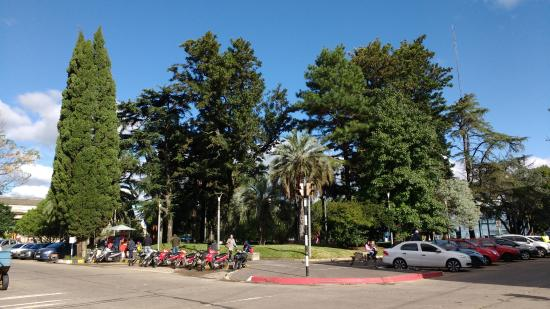
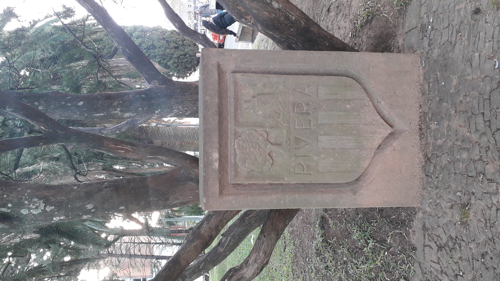

Galeria

La plaza fue remodelada en el año 2012, por el arquitecto Jose Mazzoni.
Monumento José gervasio Artigas

Vista desde calle Artigas esquina Av. Sarandi

Homenaje al Ejército Nacional

Vista desde el interior de la plaza - Parroquia Inmaculada Concepción

Escudo del departamento de Rivera

Busto de Agustin Bisio

Obra de arte en la Plaza Artigas